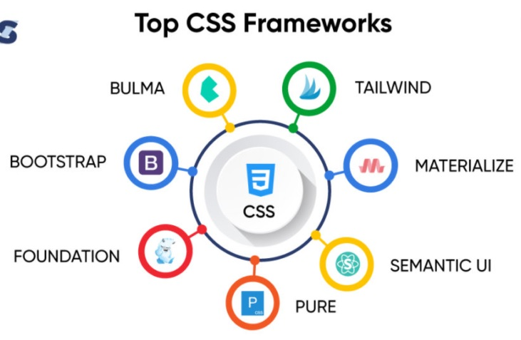
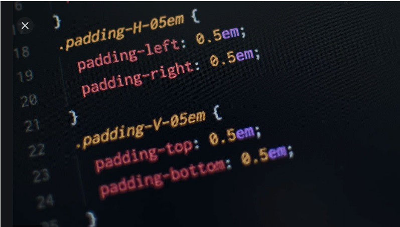

Los Frameworks es básicamente una estructura ordenada de cómo debemos trabajar con un lenguaje de programación, en Css es muy similar su uso, ya que tienen una estructura específica y herramientas que permiten implementar diseño para las páginas web.

( Tekki Web Solutions, 2021).
Los Frameworks es básicamente una estructura ordenada de cómo debemos trabajar con un lenguaje de programación, en Css es muy similar su uso, ya que tienen una estructura específica y herramientas que permiten implementar diseño para las páginas web.
Los Frameworks fueron creados para facilitar y agilizar la creación de páginas web basados en estándares, teniendo en cuenta la compatibilidad con los navegadores y mostrando los códigos mucho más fáciles de comprender. Como parte de su estructura encontramos los plugins, las hojas de estilo en cascada CSS.
Para la creación de páginas web usando los frameworks, mientras se tarda horas programando una página, usando los frameworks la misma página podría estar lista en minutos.
Algunos de los Frameworks mas usados son:
- Bootstrap
- Foundation
- Materialize CSS frameworks.
- Semantic UI
- Bulma
- Tailwind
- Pure
;

(Gorobec, 2021)